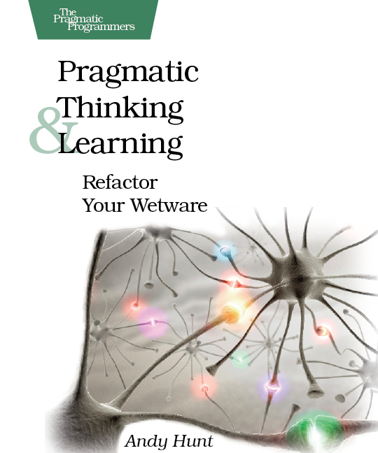

Use the space bar or arrow keys to browse the slide.
Some of the images are pretty big, so if you see an empty slide then wait a bit.
Learning is something you do, not something done to you
It’s something you can get better at
You can learn (almost) everything
Keila Banks at OSCON 2015
Set concrete, realistic goals
Pick projects that motivate you
Consider the context, plan accordingly

Locked Doors, Headaches, and Intellectual Need - on problem-solution ordering issues